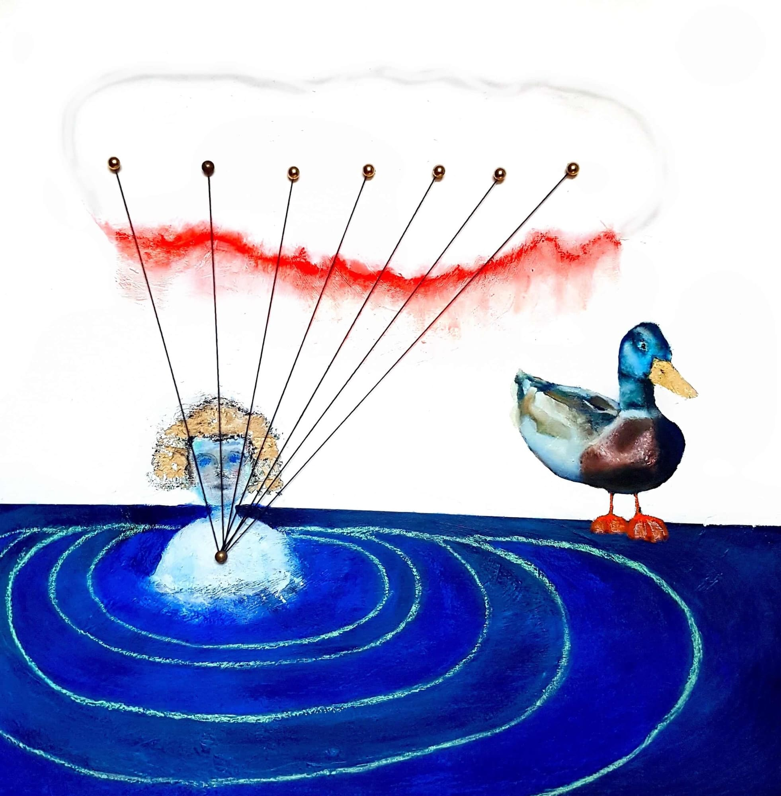

Bewirbt man sich mit Bildern für einen Kunstwettbewerb, braucht es eine “künstlerische Stellungsnahme” (“artist statement”). Ich finde das unsinnig. Kunstwerke haben keinen Zweck (und schon gar keine Relevanz). Kunstwerke müssen für sich stehen können. Von sich aus überzeugen. Nur zwecklose Kunstwerke, haben das Potenziall sinnvoll zu sein. Es ist eine westliche Krankheit zweckvoll und sinnvoll gleichzusetzen. Selbst rückwirkend wird das Kunstwerk nun im Hinblick auf seine Zwecke bestimmt. Nur weil die Werbeindustrie Bilder für Zwecke missbraucht, müssen die Künstler sich nicht der Werbeindustrie angleichen und mit ihren Kunstwerken irgendetwas bezwecken wollen. Aus dieser Krankheit resultiert das Verlangen mancher Künstler “aktivistisch” zu sein. Sie nehmen den Sinn aus dem Werk und setzen ihn in eine Sache ausserhalb des Werkes (bspw. die moralische Verbesserung der Menschheit). Kurz: In einem artist statement muss sich der Künstler rechtfertigen, warum seine Kunst sinnlos sei.
